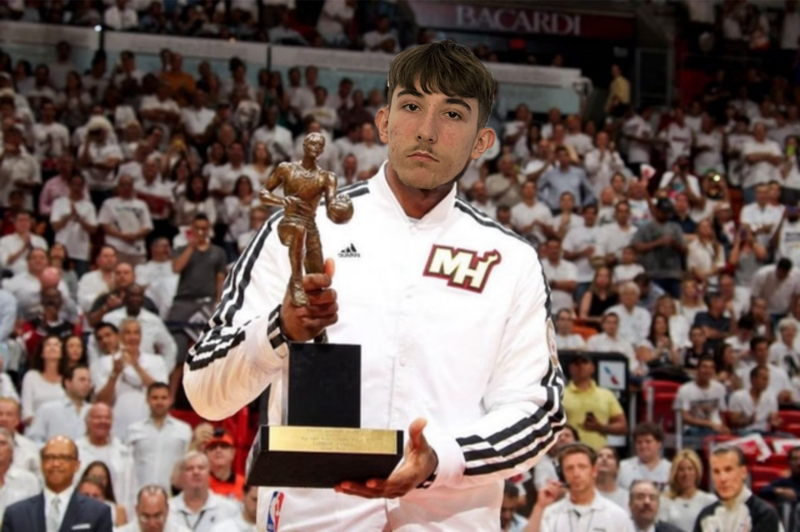
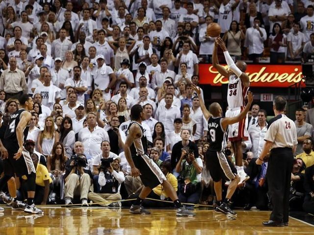
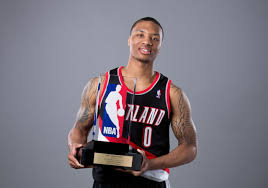
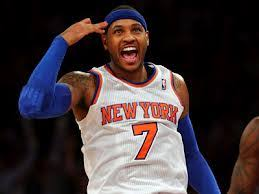

Marko Kruk imao je sezonu koju neki i dan danas nazivaju jednom od najboljih u kojoj mu je falio samo 1 glas za prvo mjesto kako bi imao prvu i jedinu(ne zadugo) jednoglasnu MVP nagradu ali možda niti nije njegova najbolja

Jedno od najboljih finala, stari trio San Antonija plus Kawhi Leonard u svojoj drugoj sezoni protiv big3 Heata i starog Ray Allena. u šestoj utakmici finala se desila jedna od najvećih grešaka u trenerskoj karijeri legendarnog Gregga Popovicha, kada je izvadio Tim Duncana pred kraj utakmice zbog čega je Heat nakon promašaja u bitnom trenutku uspio dobiti loptu nazad te je Ray Allen pogodio jedan od najbitnijih šuteva ikada kako bi spasio Krukovu karijeru i poslao utakmicu u produžetke gdje su Kruk i prijatelji pobedili kao i u sedmoj utakmici kako bi osigurali drugi naslov za redom.

Eksplozivni novak sa nevjerojatnim šutom Damian Lillard je imao nevjerojatnu prvu sezonu u Portlandu te postao jedan od samo 6 ikada novaka koji su dobili sve glasove za osvojiti nagradu.

Melo je igrao nevjerojatno i bio najbolji strijelac lige, ali Knicks nisu mogli dalje od druge runde. Kobe je pokušao vući Lakerse s Dwightom i već dosta starim Nashom, ali ozljede su sve uništile. Spursi su pokazali da su i dalje stroj, iako nisu uspijeli osvojiti, ali nisu još gotovi.